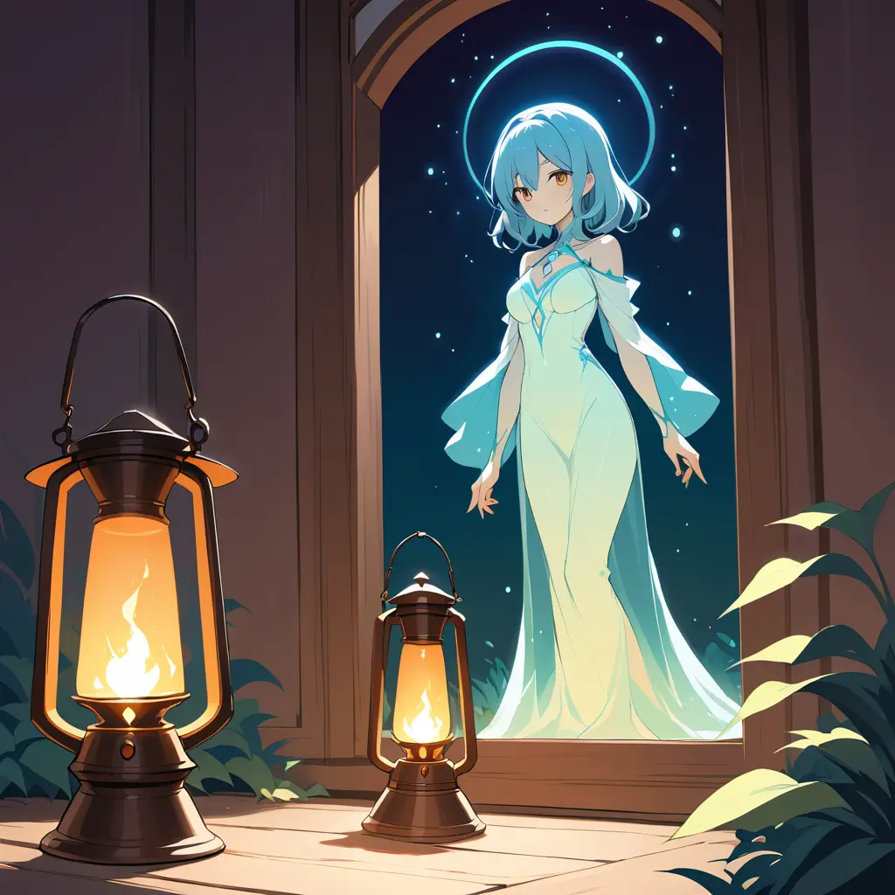

-
Energía Térmica
La energía térmica es la energía que se transfiere debido a la temperatura. Imagina que calientas agua en una olla; cuando el agua se calienta, las moléculas dentro de ella se mueven más rápido, como si estuvieran bailando. Esa "danza" es energía térmica, que usas para cocinar alimentos.

-
Energía Solar
La energía solar proviene del Sol en forma de luz y calor. Piensa en el Sol como una gran lámpara en el cielo. Podemos usar esa luz y calor para calentar cosas o convertirla en electricidad con paneles solares, como si estuviéramos atrapando la luz del Sol en un vaso.

-
Energía Eléctrica
La energía eléctrica es el movimiento de electrones en un conductor. Imagina que la electricidad es como el agua que fluye por una manguera; al encender un interruptor, es como abrir la llave de la manguera para que el agua (la electricidad) fluya y haga funcionar cosas como las lámparas o el televisor.
-
Energía Eólica
La energía eólica es la energía obtenida del viento. Piensa en cómo cuando soplas aire en un molino de papel, hace que gire. Los aerogeneradores funcionan de manera similar; cuando el viento sopla, hace girar las aspas y produce electricidad, como si el viento estuviera soplando energía.

-
Energía Potencial
La energía potencial es la energía que posee un objeto debido a su posición. Imagina que estás en la cima de una montaña con una pelota; la energía potencial es como la energía que tiene la pelota antes de que la dejes caer. Está "guardada" porque la pelota está alta; si la sueltas, esa energía se convierte en movimiento.

-
Energía Cinética
La energía cinética es la energía asociada al movimiento de un cuerpo. Cuando corres, tu cuerpo se mueve rápido, y eso es energía cinética. Es como lanzar una pelota; cuando se mueve, tiene energía cinética. Cuanto más rápido vayas, más energía cinética tendrás.

-
Energía Mecánica
La energía mecánica es la suma de la energía cinética y la energía potencial de un objeto. Imagina una cuerda con un muelle; si lo estiras, le estás dando energía potencial. Cuando lo sueltas, esa energía se convierte en movimiento. La energía mecánica es la combinación de la energía que tiene un objeto en reposo y la energía que tiene cuando se mueve.
-
Energía Química
La energía química es la energía almacenada en los enlaces de las sustancias. Piensa en ella como el combustible dentro de un coche. Cuando enciendes el coche, el combustible se quema y convierte esa energía en movimiento, como si estuvieras usando un "motor de energía" para impulsar el vehículo.
-
Energía Luminosa
La energía luminosa es la energía transportada por la luz. Imagina que es como la luz de una linterna; cuando la enciendes, la luz brilla y te ayuda a ver en la oscuridad. Esa luz es energía luminosa que podemos ver y que también es importante para que las plantas crezcan, ya que necesitan luz del Sol.
 -
Energía Nuclear
La energía nuclear es la energía almacenada en el núcleo de los átomos. Imagina que los átomos son como pequeñas pelotas en un juego de canicas. La energía nuclear es la energía escondida dentro de esas pelotas; cuando las "canicas" se juntan o se separan, liberan mucha energía, como si hicieran una gran explosión. Esta energía puede usarse para generar electricidad en centrales nucleares.